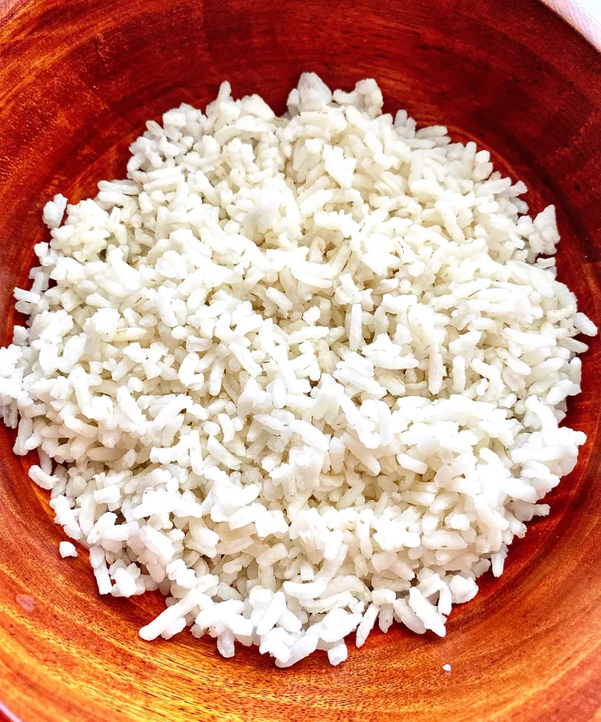

Ryoh's Easy White Rice

Description
A simple stovetop recipe that ensures your rice is fully cooked.
Ingredients
*Salt is optional
Steps
- Add however much rice you want to cook to the pan.
- Wash rice throughly. At least three rinses should do.
- Fill the pan with water until it covers the rice by about an inch. Add salt if you choose here.
- Heat rice until boiling
- Reduce heat to low and cover
- Cook for 15 minutes
- Remove pan from heat Don't take off lid
- Let rest for additional 15 minutes
- Enjoy